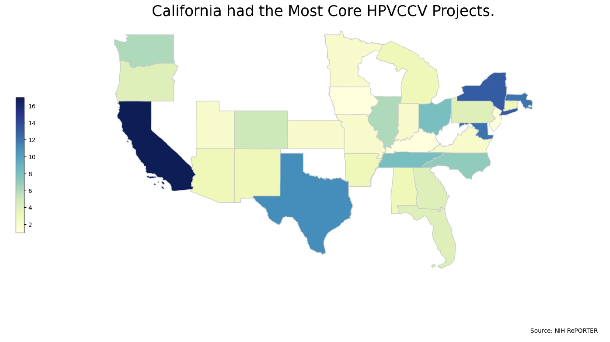

This is an evaluation proposal to a potential funding source, aiming to provide systematic feedback to interested decision-makers to evaluate Community First, a homelessness services outreach program in Times Square, New York City.
Course: Evaluating Programs and Policies, Spring 2022
This project provides insights into how ENDGBV addressed challenges in combating domestic violence during the pandemic in NYC. It targets individuals interested in public service and its impact, helping readers understand how unexpected events like pandemic can worsen domestic and gender gaps and highlight the importance of timely remote measures for the public.
Data Source: NYC Open Data

Specifically, the project aims to answer 2 questions. 1. In which borough, the public schools has the highest average Economic
Need Index(ENI) of Srudents in 2020-2021? 2.In that borough, what is the demographic profile (i.e. ethnicity,gender) of students look like in 2020-2021?
Data Source: NYC Open Data

This section provides more advanced python projects that more carefully dealing with real-world data sets.
Techniques: Data Exploration, Data Record and Linkage, Data Visualization, Text Analysis, Machine Learning
Data Source: NIH RePORTER

These are three individual assignments from Estimating Impact in policy Research course. The professors provided real-life settings and I use Stata to estimate the program or policy's impact and produced the written deliverables.
Types: Cross Sectional, Difference in Difference, Panel
Data Source: Fictitious Data Constructed by Professor